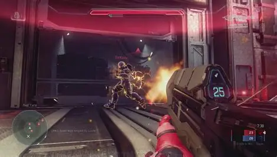
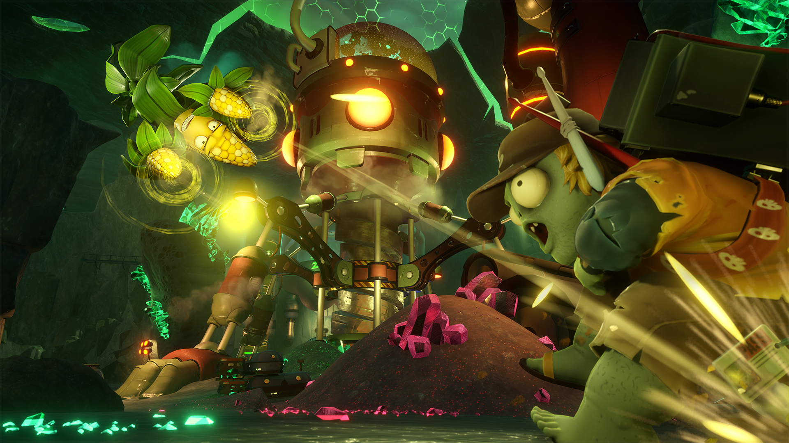
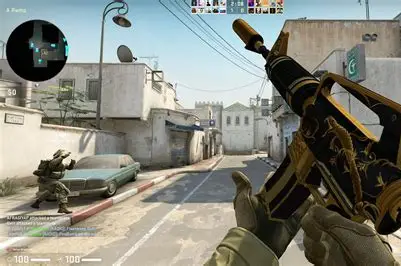

Pues en lo general me gusta jugar videojuegos de diversos tipos, y pues para empezar esta el Genero Shooter que como el nombre indica trata comunmente de disparos. Es un genero es un poco repetitivo si lo piensas de manera logica pero este genero tiene mas variantes lo que le da esa chispa de emocion al jugarlo, ya sea con amigos, por una meta personal, por buscar algun item exclusivo, o simplemente buscar ser mejor.
| Nombre | Gameplay |
| Halo |  |
| PvZ Garden Warfare 2 |  |
| CSGO |  |